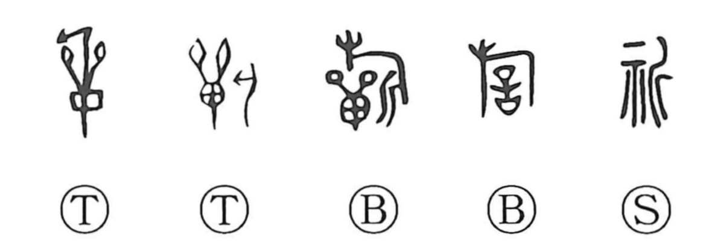

祈

Kun: inoru | On: ki
to pray ・ prayer ・ to request
Explanation
A phono-semantic character: the altar radical 示 (礻) marks the sphere of ritual, while 斤 serves as the phonetic that gives the on-reading ki, as in 圻 and 沂. Early forms sometimes add an oval shield with feather ornaments (單), a sign for vows addressed to the gods, or even a flag, conjuring a scene of formal supplication for success in war or the hunt. From this ritual context the meaning broadened to praying in general and, by extension, making a request.